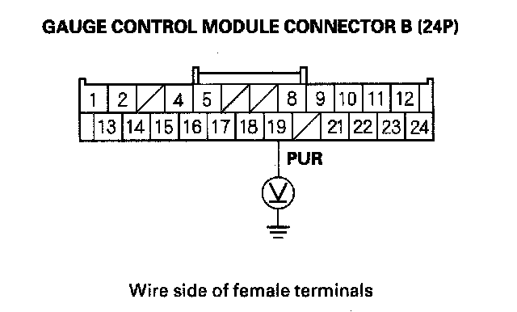
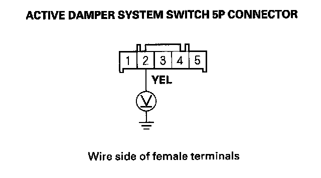
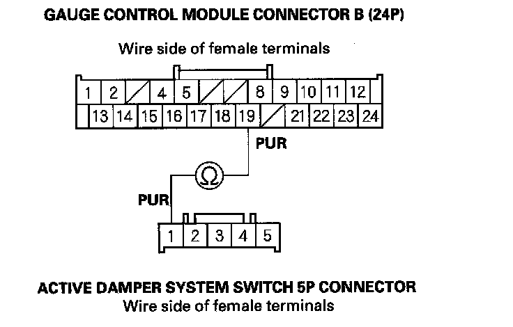
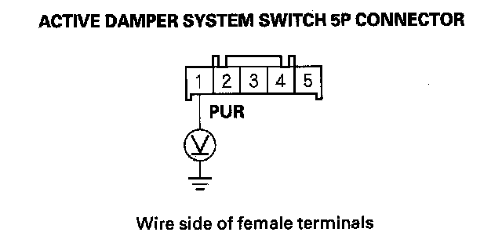

Active Damper System Switch Does Not Work (Damper Mode Cannot Be Selected)
Active damper system switch does not work (damper mode cannot be selected)1. Turn the ignition switch ON (II).
2. Check for the ACTIVE DAMPER SYSTEM SWITCH in the ACTIVE DAMPER SYSTEM DATA LIST with the HDS when pushing the active damper system switch.
Does the indicator change from ON (OFF) to OFF (ON)?
YES - Check for loose terminals in the gauge control module connector B (24P). If necessary, substitute a known-good gauge control module, then recheck. If it is OK, replace the original gauge control module.
NO - Go to step 3.
3. Turn the ignition switch OFF.
4. Check the No. 21 (7.5 A) fuse in the under-dash fuse/relay box.
Is the fuse OK?
YES - Go to step 5.
NO - Replace the blown fuse.
5. Disconnect gauge control module connector B (24P).
6. Turn the ignition switch ON (II).
7. Push the active damper system switch, and turn it ON.
8. Measure voltage between body ground and gauge control module connector B (24P) terminal No. 19.

Is there battery voltage?
YES - Check for loose terminals in the gauge control module connector B (24P). If necessary, substitute a known-good gauge control module, then recheck. If it is OK, replace the original gauge control module.
NO - Go to step 9.
9. Turn the ignition switch OFF.
10. Disconnect active damper system switch 5P connector.
11. Check the active damper system switch.
Is the active damper system switch OK?
YES - Go to step 12.
NO - Replace the active damper system switch.
12. Turn the ignition switch ON (II).
13. Measure voltage between body ground and active damper system switch 5P connector terminal No. 2.

Is there battery voltage?
YES - Go to step 14.
NO - Repair open in the wire between the under-dash fuse/relay box and the active damper switch.
14. Check for continuity between gauge control module connector B (24P) terminal No. 19 and the active damper system switch 5P connector terminal No. 1.

Is there continuity?
YES - Go to step 15.
NO - Repair open in the wire between the gauge control modulator and the active damper system switch.
15. Turn the ignition switch ON (II).
16. Measure voltage between body ground and active damper system switch 5P connector terminal No. 1.

Is there more than 0.1 V?
YES - Repair short to power in the wire between the gauge control module and the active damper system switch.
NO - Check for loose terminals in the active damper control unit connectors A (20P)/B (14P). If necessary, substitute a known-good active damper control unit, then recheck. If it is OK, replace the original active damper control unit.